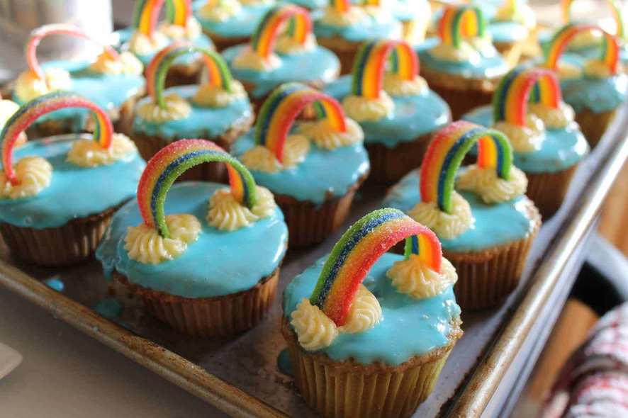

Rainbow Cupcakes

Description:
Who doesnt love cupcakes and rainbows? Well why not combine them with these delicious rainbow cupcakes!
Ingredients:
- 2 sticks unsalted butter, softened
- 2 cups cake flour
- 1 cup all-purpose flour
- 2 cups packed dark brown sugar
- 1 cup granulated sugar
- 6 large eggs
- 1 tablespoon vanilla extract
- ¼ teaspoon salt
- 8 ounces sour cream
- ½ teaspoon baking soda
- 1 heaping cup of freeze-dried strawberries, crushed
- buttercream (See my lemon cupcakes and frosting recipe from Peach's 4th birthday or my carrot pineapple cupcakes cream cheese frosting recipe, if you don't already have a favorite.)
- rainbow belt candy, cut into 24 pieces (each piece is about 3 inches long)
- blue icing: powdered sugar + just enough milk to desired consistency + dribble of vanilla + dab of Wilton blue coloring gel
Steps:
- Preheat oven to 350 degrees.*
- Line 24-well muffin tin with cupcake liners.
- Beat sugars and butter together, until light and fluffy, about 3 minutes.
- Beat in eggs, one at a time, beating well between eggs. Beat in vanilla.
- Whisk and sift together flour and salt. Set aside. In another bowl, combine sour cream and baking soda.
- Gradually add flour mixture to butter mixture in three additions, alternating with sour cream mixture and starting and ending with the flour mixture.
- Stir in the crushed freeze-dried strawberries.
- Fill each cupcake well about ⅔ full of batter. (I actually came out with 27 cupcakes.)
- Bake for about 25-30 minutes, or until a toothpick inserted into centers comes out clean. (The timing will partly depend on your desire for puffy versus flat-topped cupcakes.)
- Cool in pans for a few minutes, until able to be handled without burning your fingers, and transfer to rack to cool completely.
- How to decorate: Snip rainbow belts into about 3-inch pieces to create the rainbow that will sit atop the cupcake. Set aside.
- Make the blue icing: mix powdered sugar (I used about 1½ cups) and a couple tablespoons of milk and dribble of vanilla with a electric hand-held mixer to make smooth. If you want more runny icing, add more milk. Mix blue gel coloring in well.
- Dip each cupcake top into the blue icing and set aside.
- Using buttercream in a piping bag, pipe two small rosettes on top of the iced cupcake to make "clouds" on top of the cupcake.
- Add the rainbow by placing each end of the rainbow belt candy into a cloud. You might need to shove the candy into the cupcake a little to keep it upright. Pipe a little more frosting to make the clouds look more puffy, if desired.